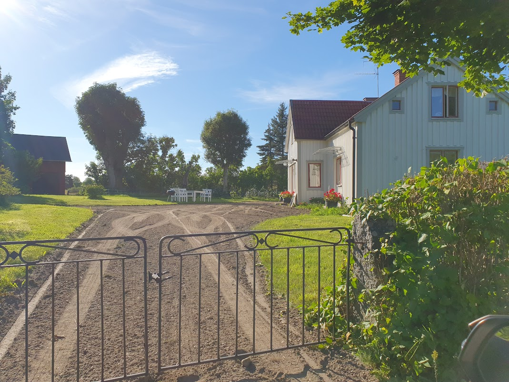
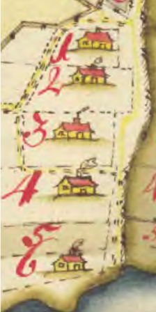
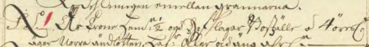
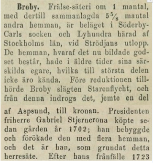

Hovslagargården

Hovslagarbostället i Aspsund är den gård som på historiska kartor och än idag är beläget först i byn sett från landsvägen. Efter laga skiftet 1837 omnämnt som nummer 5, före lagaskiftet på äldre kartor numrerat som 1. Huset har som kartor avslöjar aldrig flyttats (iaf inte någon längre bit) och har flera tecken på att det är gammalt. Lågt i tak, rumsfördelning enligt dokument från Lagaskifte 1837 etc.

Fram till ca 1680 var första gården på byvägen ett frälsehemman under Broby säteri. Troligen tog staten över gården via reduktionen och inom kort blev det officersboställe för det nybildade Roslags kavalleri, livregementet till häst. Från 1682 till 14 Mars år 1897 då den såldes för 7600kr användes det sålunda som boställe åt kompaniets hovslagare och senare Sergeanter.

Sedan 1897 har gården varit i privat ägo och den ganska långa perioden av att ha varit boställe åt kavallerister föll till stora delar i glömska. Huset som nu står på platsen tror vi är ca 200 år efter att ha läst om husets skick och rumsfördelning i laga skiftet 1837. Troligen var huset vid något tillfälle i dåligt skick, kanske vid syn/besiktning vid byte av kavallerist och har rivits/byggts upp eller om.

Texten är hämtad från Historiskt-geografiskt och statistiskt lexikon öfver Sverige [11] och detta tillsammans med kartan från 1639 [6] pekar mot att Broby hade denna gård som frälse före reduktionen till kronan ca 1680. På senare kartor är endast den sydligaste gården frälsehemman. Ombildades gården kanske vid reduktionen (indragning av gods o gårdar från adeln) under Karl VI:s tid till att bli officersboställe tillhörande kronan?
 I Garland bok om båtsmän i Roslagen [14] fann jag årtalet då gården blev officersboställe. Årtalet stämmer överens med när Roslags kavalleri upprättades genom att man flyttade beridna soldater och officerare tillhörande Värmlands kompani till Roslagen där de förlades enligt försvarsmakten artikel.
I Garland bok om båtsmän i Roslagen [14] fann jag årtalet då gården blev officersboställe. Årtalet stämmer överens med när Roslags kavalleri upprättades genom att man flyttade beridna soldater och officerare tillhörande Värmlands kompani till Roslagen där de förlades enligt försvarsmakten artikel.
Forts.... ......... .......